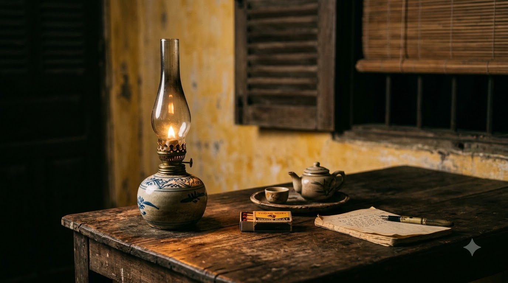
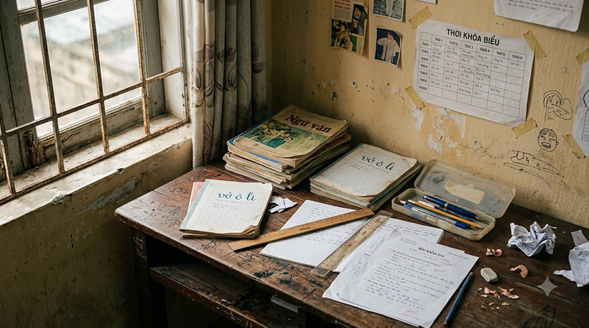
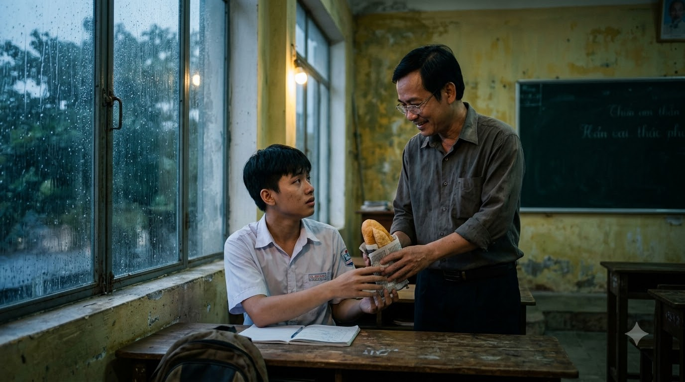
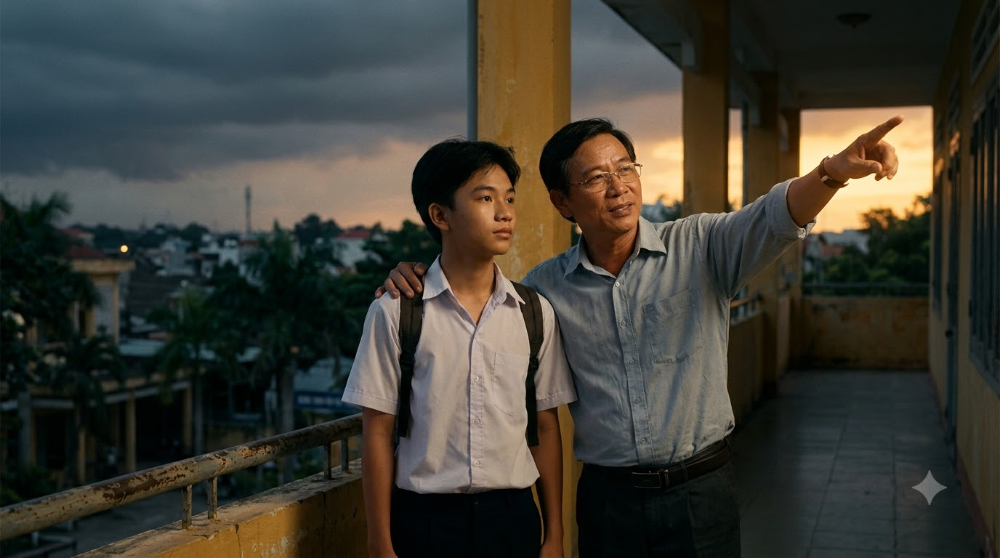
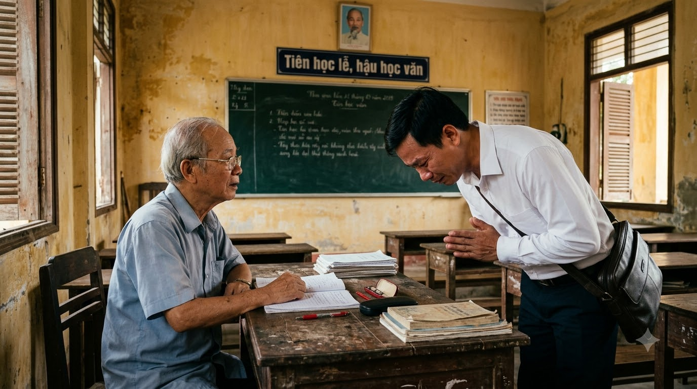
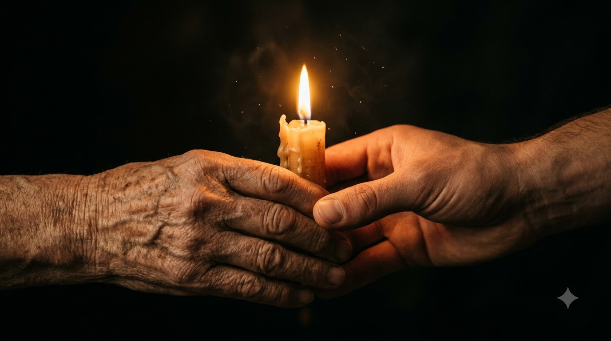

NGỌN ĐÈN
KHÔNG TẮT

Câu chuyện về sự tận tâm của người thầy và sức mạnh của lòng biết ơn vượt thời gian.
Trong ký ức của Tuấn, những năm tháng cấp ba không phải là màu hồng của những buổi đi chơi, mà là những chuỗi ngày vật lộn với mặc cảm vì sức học giảm sút và hoàn cảnh gia đình khó khăn.

Tuấn từng định buông xuôi, chấp nhận việc rời ghế nhà trường để đi làm thuê, cho đến khi thầy Bình - giáo viên chủ nhiệm đồng thời là thầy dạy Toán - bước vào cuộc đời cậu.
Thầy Bình không chỉ dạy chữ, thầy dạy cả sự thấu cảm. Nhận ra Tuấn thường xuyên ngủ gật trong giờ vì phải đi làm thêm đêm, thầy không trách mắng mà âm thầm ở lại lớp mỗi buổi chiều để phụ đạo riêng cho cậu.

Có những hôm trời mưa tầm tã, dưới ánh đèn vàng vọt của căn phòng học cũ, thầy kiên nhẫn giảng đi giảng lại một công thức khó, tay khẽ đẩy về phía Tuấn ổ bánh mì mua vội dọc đường.

Thầy bảo: "Đừng để cái nghèo đánh cắp đi trí tuệ của em. Thầy còn tin em làm được, thì em không được phép bỏ cuộc." Chính sự tận tâm và ánh mắt tràn đầy kỳ vọng của thầy đã trở thành ngọn hải đăng, soi sáng con đường của Tuấn.
Năm ấy, Tuấn đỗ đại học trong sự vỡ òa của gia đình và xóm làng. Ngày nhận được tin, người đầu tiên Tuấn tìm đến là thầy Bình.

Cậu thấy thầy vẫn ngồi đó, bên bàn giáo án cũ kỹ, mái tóc đã thêm nhiều sợi bạc vì những đêm thức trắng lo cho học sinh. Tuấn nghẹn ngào cúi đầu chào thầy, giọt nước mắt biết ơn lăn dài trên má.
Cậu hiểu rằng, nếu không có những buổi chiều thầy ở lại, không có những lời động viên sắt đá và tình yêu thương vô bờ bến ấy, cậu sẽ không bao giờ có được ngày hôm nay.
Nhiều năm trôi qua, Tuấn giờ đây đã là một kỹ sư thành đạt, nhưng mỗi dịp lễ Tết, cậu vẫn luôn trở về ngôi trường xưa. Đứng trước thầy Bình, Tuấn thấy mình vẫn là cậu học trò nhỏ, luôn tự hào về người thầy đưa đò năm ấy.

"Sự tận tâm của thầy không chỉ giúp Tuấn thay đổi số phận, mà còn dạy bài học quý giá nhất về lòng biết ơn – rằng trên thế gian này, có những ngọn đèn sẽ không bao giờ tắt, bởi chúng được thắp lên từ trái tim."
NGỌN ĐÈN
KHÔNG TẮT
“Những ngọn đèn sẽ không bao giờ tắt, bởi chúng được thắp lên từ trái tim của những người đưa đò thầm lặng.”